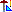

Decem
Decembass
Decima
Decima Nona
Decima Quinta
Decima Settima
Decupla
Dessus de ...
Dessus de Flûte
Dessus de Flûte Allemande
Detzehm
Detzehmbass
Detzem
Detzembass
Deutsche Flöte
Deuxième ...
Devanture 
Diaocton
Diapason
Diapason Conique
Diapason Magna
Diapason Phonon
Diapason Sonora
Diapente
Diapente Pileata
Diaphone
Diaphone Profundo
Diaphonic Bassoon
Diaphonic Diapason
Diaphonic Horn
Diaphonic Violone
Diatonus
Diez
Diez y Novena
Diezmonovena
Discantprincipal
Disdiapason
Disdiapente
Disdisdiapason
Diskantprinzipal
Diskantschwiegel
Ditonus
Divinare
Docena
Doef
Döeff
Döff
Doif
Doiflöt
Doiflöte
Dolcan
Dolcan Céleste
Dolcan Mixture
Dolce
Dolce Céleste
Dolce Cornet
Dolce Flute
Dolce Flute Céleste
Dolce Grand Cornet
Dolce Mixture
Dolce Suono
Dolceaan
Dolcean
Dolcette
Dolcette Flute
Dolcian
Dolciana
Dolciane
Dolciano
Dolciano Profundo
Dolcissimo
Dolcissimo Céleste
Dolkan
Dolzflöte
Dolziana
Donner
Doof
Doppelflöt[e]
Doppelflötenbass
Doppelgedackt
Doppelgedeckt
Doppelkegelregal
Doppelprincipal
Doppelrohrbordun
Doppelrohrflöte
Doppelrohrgedeckt
Doppelspitzflöte
Doppelt
Dopplt Unterbass
Doris
Dotzena Nazarda
Double Bass
Double Basset Horn
Double Bassoon
Double Claribel Flute
Double Clarinet
Double Diapason
Double Dulciana
Double English Horn
Double Flute
Double Gemshorn
Double Hautboy
Double Melodia
Double Oboe
Double Oboe Horn
Double Open Diapason
Double Open Wood
Double Ophicleide
Double Principal
Double Quint
Double Salicional
Double-Stopped Bass
Double Stopped Diapason
Double String
Double Tierce
Double Trombone
Double Trumpet
Double Tuba
Double Twelfth
Double Vox Humana
Doublette
Doucaine
Douce
Douseynen
Drum Pedal
Drums
Ductus inutilis
Dudelsack
Duiflöt
Duiflöte
Dulcan
Dulcayna
Dulceflöt
Dulceon
Dulcet
Dulcet Principal
Dulcetina
Dulciaan
Dulcian
Dulciana
Dulciana Celeste
Dulciana Cornet
Dulciana Flute
Dulciana Flute Céleste
Dulciana Mixture
Dulciana Octave
Dulciana Principal
Dulciane
Dulcianflöte
Dulcimer
Dulcinus
Dulcis
Dulcissima
Dultzen
Dulzaen
Dulzain
Dulzaina
Dulzayna
Dulzet
Dulzfloit
Dulzflöte
Dulzgedackt
Dulzian
Dulziana
Dulziano
Dulzianregal
Dulzino
Dunecken
Duodecima
Duophone
Duplicat
Duytsche Fluyt
Duytsche Hooren
Dwarsfluit